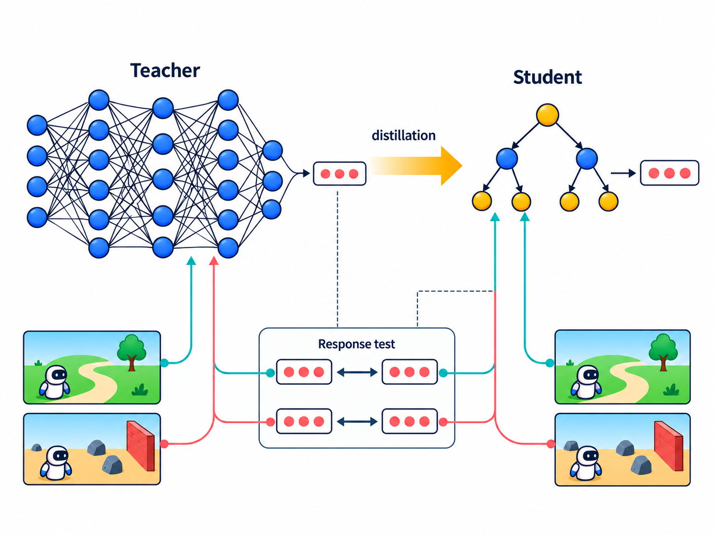
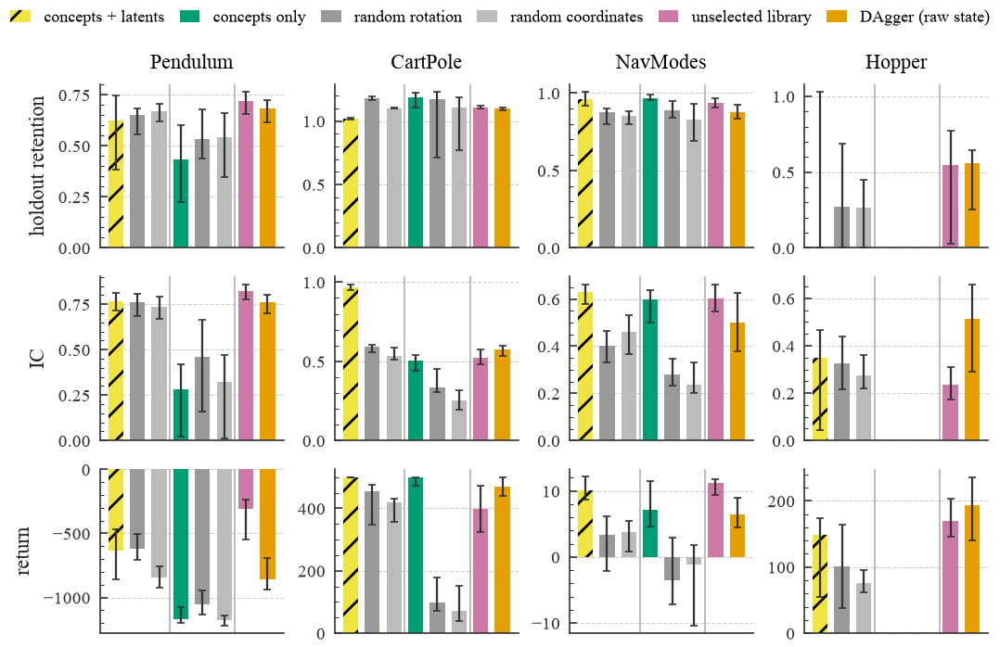

The question
A compact policy can match a neural teacher’s actions on familiar states without responding the same way when inputs change. This study asks whether selecting response-validated features or using them to construct training pairs adds value beyond ordinary off-policy sampling.

Experimental design
The primary study uses 27 PPO and SAC teachers on four control tasks, with equal tree size and a 20,000-label budget. Intervention consistency (IC) measures agreement between teacher and student action differences on matched state pairs. A post-hoc expansion across 33 teachers compares IC with action error on identical endpoints.
What the controls show
Counterfactual augmentation improves fresh-pair IC by 0.097, but its increment over random-pair sampling is 0.020. In the endpoint-matched analysis, only 58 of 2,376 method comparisons survive endpoint-error, return and competence matching; their median absolute IC gap is 0.024. Restricting inputs to validated features can also remove information needed for control. A predictive sufficiency check repairs the Pendulum failure, without establishing a general repair.
Interpretation
IC is a descriptive response statistic, not evidence that a student preserves its teacher’s internal mechanism. The experiments do not establish an interpretability-specific control or robustness advantage, or incremental diagnostic utility for IC. The study separates its pre-registered core from post-hoc controls and sensitivity analyses.